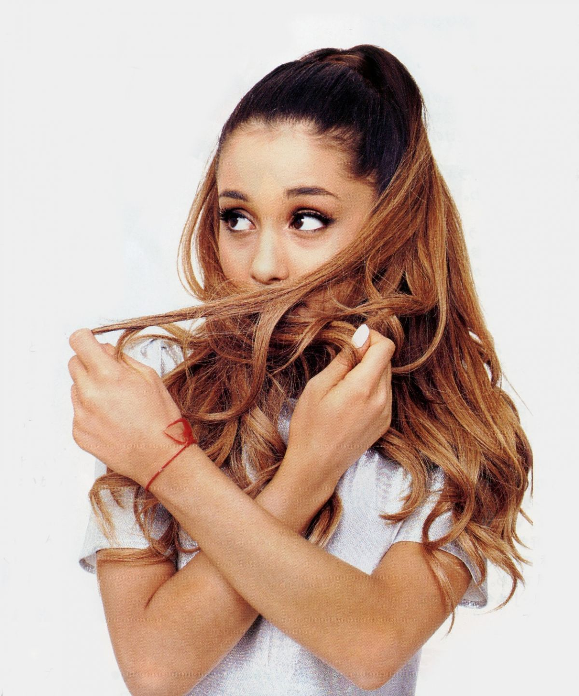
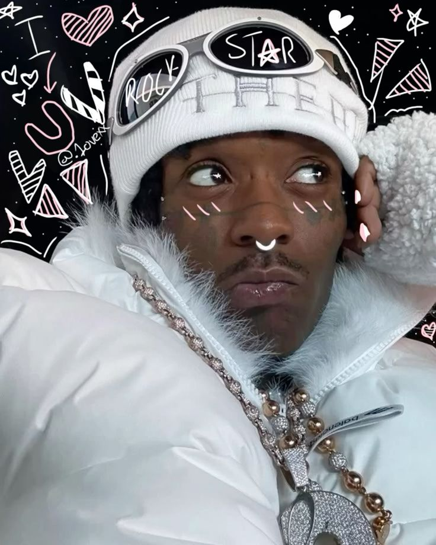
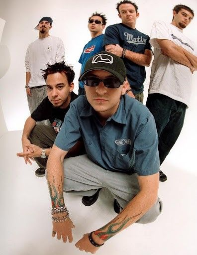

Твой пульт от мировых трендов
Не знаешь, что послушать прямо сейчас? Здесь ты можешь листать мировые чарты и исследовать жанры - от поп-музыки до клауд-рэпа. Кликай по карточкам, находи любимых исполнителей через поиск, открывай их лучшие песни и слушай в один клик.
Сейчас играет:
Не зацепило? Если тяжелый метал или спокойная классика сейчас не подходят, найди трек под свое личное настроение! Какая атмосфера окружает тебя в эту секунду? Доверься интуиции, выбирай карточку, которая точнее всего описывает твой день, и всего один клик - плеер поймает твою волну!
Мировые чарты
Ищем, что сейчас слушают...
Карта жанров
*Жми на карточку, чтобы открыть чарты этого жанра/исполнителя.
Pop
Слушаем:

Ariana Grande
Жанр: Pop / R&B
Американская певица с вокальным диапазоном в четыре октавы, начавшая карьеру на телевидении и ставшая одной из главных хитмейкерш в мировой поп-музыке. Её треки строятся на стыке классических поп-структур, мягкого R&B и плотных трэп-битов. В своих песнях она часто поднимает личные темы: от переживания семейных драм до вопросов ментального здоровья, сочетая коммерческий звук с автобиографичными текстами.
Rap / Hip-Hop
Слушаем:

Lil Uzi Vert
Жанр: Hip-Hop / Trap / Emo Rap
Американский рэпер, получивший массовую известность после релиза сингла «XO Tour Llif3». Стал одним из главных представителей новой школы хип-хопа, смешав элементы рок-культуры с трэп-музыкой. Его треки отличаются высокой скоростью подачи, использованием футуристических синтезаторов и меланхоличными текстами. Известен своими экспериментами со звуком, частой сменой творческих образов и эксцентричным поведением на сцене.
Rock
Слушаем:

Linkin Park
Жанр: Alternative Rock / Nu-Metal
Группа, определившая развитие альтернативной рок-сцены начала 2000-х годов. Их дебютная пластинка «Hybrid Theory» разошлась миллионными тиражами благодаря контрастному звучанию: коллектив совместил тяжелые гитарные риффы, электронику, речитатив Майка Шиноды и эмоциональный вокал Честера Беннингтона. Песни группы посвящены темам внутренней борьбы и отчуждения. В 2024 году группа возобновила концертную деятельность с новой вокалисткой Эмили Армстронг.
Cloud rap / Hyperpop
Слушаем:
Bladee
Жанр: Cloud Rap / Hyperpop / Drain
Шведский рэпер, продюсер и дизайнер (настоящее имя — Бенджамин Райхвальд), начавший карьеру в Стокгольме с увлечения панк-роком и граффити. В 2013 году он стал сооснователем музыкального коллектива Drain Gang, который сильно повлиял на развитие клауд-рэпа. Треки Bladee получили известность в андерграунде благодаря отстраненной подаче, эмоциональным текстам и новаторскому электронному звуку на стыке трэпа, эмо-рока и эмбиента.
О платформе
MusicPort - интерактивный музыкальный портал, созданный для поиска исполнителей и мониторинга главных мировых трендов в режиме онлайн. Мы объединили удобную карту жанров, умную систему поиска и глобальные чарты на одной площадке, чтобы вы могли открывать для себя новую музыку без лишних преград.
Благодаря интеграции с базой данных стримингового сервиса Deezer, сайт в реальном времени подгружает официальные мировые хит-парады и находит нужные треки по всей огромной библиотеке артистов. Встроенный плеер позволяет мгновенно запускать песни, изучать биографии музыкантов и переключаться между направлениями - от поп-хитов до глубокого андерграунда.